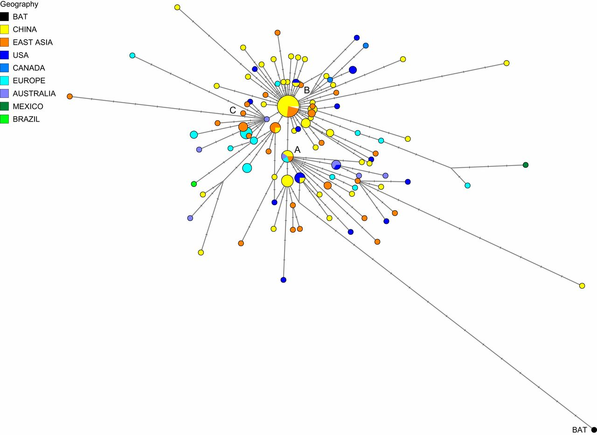

Au fur et à mesure que les tests se généralisent à travers le monde, de plus en plus de données sont disponibles pour les analyses dites “phylogénétiques”, qui permettent de reconstruire l’évolution temporelle de Covid-19 au sein des populations humaines en analysant les mutations qui apparaissent progressivement dans son génome. Il s’agit en quelque sorte de reconstruire l’arbre généalogique du virus a posteriori, en partant du principe que chaque nouvelle mutation constitue une nouvelle «branche» bien identifiable.
Or ces nouvelles analyses suggèrent que le scénario n’est probablement pas aussi simple qu’il n’y parut au premier abord, et qu’il est prématuré de faire porter le fardeau moral de l’épidémie sur les épaules de la Chine. Compte tenu des données scientifiques actuelles, les sphères médiatiques et politiques devraient faire preuve de prudence sur cette question sensible, à l’heure où les tensions diplomatiques s’exacerbent.
Pour rappel, le scénario d’une émergence initiale à Wuhan repose sur deux faits principaux:
● Le génome de Covid-19 est très proche du génome d’un virus nommé BatCov-RatG13 ayant infecté une chauve-souris analysée à l’Institut de virologie de Wuhan. Mais la chauve-souris en question fut capturée en 2013 dans une cave de la province Yunnan, située à plus de 1000 kilomètres de là.
● Parmi les premiers cas recensés, une grande majorité avait fréquenté le marché d’animaux sauvages de la ville de Wuhan. Cependant, le premier patient testé positif n’avait jamais fréquenté le marché en question.
Malgré les apparences
Si le consensus s’est maintenu pendant presque trois mois, il est à présent battu en brèche par plusieurs études phylogénétiques qui suggèrent que la souche virale qui s’est répandue à Wuhan n’est pas la source originelle du virus, ou bien qu’elle ne représente qu’une source possible parmi d’autres.
Avant d’entrer dans le vif du sujet, il faut insister sur le fait qu’aucune de ces études ne remet en question l’idée selon laquelle le virus proviendrait d’une chauve-souris. En réalité, le virus de chauve-souris initialement analysé à Wuhan est même utilisé comme point de référence dans plusieurs analyses, l’objectif étant de retracer le parcours du virus depuis son plus proche cousin connu chez l’animal.
La première étude jetant un doute sur l’origine de la pandémie provient d’un rapport publié par le “Bulletin de l’Organisation Mondiale de la Santé” dès le 24 février par des chercheurs d’IBM, aux États-Unis. Il alerte sur l’existence de trois branches, dont la plus ancienne regroupe un ensemble de patients:
● qui n’ont eu aucun contact avec le marché de Wuhan.
● qui voyagent beaucoup
● qui sont de nationalités diverses
● qui ont été infectés par un variant se répandant plus lentement que les autres
Le 5 mars, une autre étude sino-américaine publiée sur Medrxiv parvient à une conclusion similaire. Dans celle-ci, trois souches sont identifiées et — à nouveau — la souche la plus proche de BatCov-RatG13 n’est pas la souche retrouvée à Wuhan, mais une souche initialement détectée au Japon, aux USA, en Australie et dans d’autres provinces chinoises loin de Wuhan.
Wuhan, seulement une étape intermédiaire?
Le 8 avril dernier, enfin, des chercheurs anglais et allemands ont publié l’analyse phylogénétique de 160 génomes du virus dans la revue américaine PNAS. Collectés un peu partout sur la planète, ces génomes sont fortement similaires entre eux, mais il existe tout de même des variations permettant de distinguer trois souches principales, A, B et C.
Puisque la vaste majorité des cas initialement recensés à Wuhan appartient au groupe B, les variants du groupe B devraient donc être les plus proches de la souche BatCov-RatG13 (si la première contagion homme-animal a vraiment eu lieu dans cette ville). Or, ce n’est pas le cas. En réalité, les variants les plus proches du virus de chauve-souris sont ceux du groupe A recensés dans le sud de la Chine (près de Hong-Kong), au Japon ainsi qu’aux États-Unis. Le groupe C enfin est celui qui a frappé le plus durement l’Europe, et il semble n’avoir émergé que dans un troisième temps, suite à une mutation survenue au sein du groupe B.

Interrogé par la chaîne de télévision chinoise CGTN, Peter Forster de l’Université de Cambridge et premier auteur de l’étude est formel: malgré les apparences, il est trop tôt pour dire que la pandémie est née à Wuhan en Chine (voir l’interview en anglais, ici).
Si ces études pourraient être partiellement remises en cause par la découverte d’un virus encore plus proche du Covid-19 que son cousin actuel, BatCov-RatG13, elles viennent nous rappeler que le mystère demeure quant aux origines exactes de la pandémie. Or, si Wuhan n’est pas le foyer initial, où faut-il désormais chercher le patient zéro?
Le mystère s’épaissit
Compte tenu de la proximité entre Covid-19 et BatCov-RatG13, l’hypothèse principale reste que la première contagion homme-animal a eu lieu en Chine, peut-être dans la province de Yunnan. Dans ce cas, le patient zéro chinois aurait infecté directement ou indirectement quelques voyageurs de nationalités variées, avant que le virus ne mute et ne se propage rapidement à Wuhan, puis dans le reste du monde.
Cependant, rien n’interdit d’envisager d’autres hypothèses. En effet, depuis 2002, la possibilité d’une nouvelle épidémie liée aux coronavirus a motivé certains instituts de recherche à travailler sur la menace. La première épidémie de SRAS ayant éclaté en Chine, de nombreux prélèvements ont été effectués afin d’isoler les virus circulant chez les chauves-souris chinoises et de nombreux instituts ont reçu ces prélèvements à travers le monde.
Une fois dans ces laboratoires, ces virus sont cultivés pour permettre aux chercheurs d’étudier leurs propriétés sous toutes les coutures. En fonction de la question posée, les cultures se font soit sur des cellules pulmonaires de chauve-souris ou d’humains, soit sur des animaux vivants, tels que les primates ou les souris. Dans certains laboratoires de type P3 ou P4, il arrive même que ces virus naturels soient modifiés directement pour les rendre plus agressifs — approche qui a suscité de fortes polémiques il y a quelques années.
Nonobstant les élucubrations du Pr. Montagnier, relayées volontiers par les médias d’extrême-droite, on sait avec une quasi-certitude que Covid-19 n’a jamais été modifié en laboratoire. En revanche, rien n’exclut qu’il ait pu faire l’objet d’une culture in vitro, l’hypothèse étant admise au rang des possibles dans les publications scientifiques les plus sérieuses (voir par exemple cet article publié dans Nature Medicine). Soit dit en passant, ce genre de recherche peut involontairement aboutir à la sélection de virus mieux à même d’infecter les cellules humaines à travers un mécanisme passif de “sélection par passage”.
Bien que l’hypothèse reste improbable, il n’est donc pas exclu que Covid-19 soit sorti d’un laboratoire de recherche, suite à une erreur humaine ou à un dysfonctionnement matériel. Et si tel était le cas, le patient zéro pourrait aussi bien être chinois que français ou américain.
Tensions internationales
A cet égard, c’est évidemment l’institut de virologie de Wuhan — récemment équipé d’un laboratoire P4 grâce au soutien de la France — qui a été l’objet des premiers soupçons. Persévérant dans sa stratégie de stigmatisation de la Chine, Trump vient même de suggérer dans une conférence de presse que son administration explorait actuellement cette piste dont les conspirationnistes sont particulièrement friands.
Cependant, au vu des évènements récents, l’ambassadeur de Chine en France n’a pas forcément tort, n’en déplaise à ses détracteurs: ce serait plutôt du côté des États-Unis qu’il conviendrait de se tourner si l’on considère l’hypothèse d’une sortie de laboratoire. En effet, au mois d’août 2019, une faille de sécurité majeure a conduit à la brusque fermeture de nombreuses activités sensibles à Fort Detrick, haut lieu des recherches de l’armée américaine en matière de biodéfense. Le processus de stérilisation des déchets produits par ce centre de recherche travaillant sur les virus les plus dangereux au monde aurait en effet dysfonctionné à la suite d’une inondation datant de 2018, ce qui implique qu’une fuite de virus ait pu se produire. Signe de la gravité de l’évènement, la reprise partielle n’a eu lieu que le 7 décembre 2019, juste avant le début de la pandémie. Et le centre n’est redevenu pleinement fonctionnel que ce mois-ci. En d’autres termes, la labellisation P4 n’est pas synonyme d’infaillibilité, et le dernier exemple en date nous vient des États-Unis.
Quoi qu’il en soit, à l’heure où la tension grimpe et en attendant d’éventuelles données supplémentaires, il serait de bon ton que journalistes et politiques adoptent une perspective plus nuancée sur l’origine du virus. Avec presque un million de citoyens ou d’immigrants d’origine chinoise sur son sol, la France ne peut se permettre de sombrer avec Trump dans la stigmatisation de la Chine. Cette posture est d’autant plus condamnable que les analyses phylogénétiques jettent le doute sur les origines réelles de la pandémie.
Sans pour autant donner de réponses définitives.